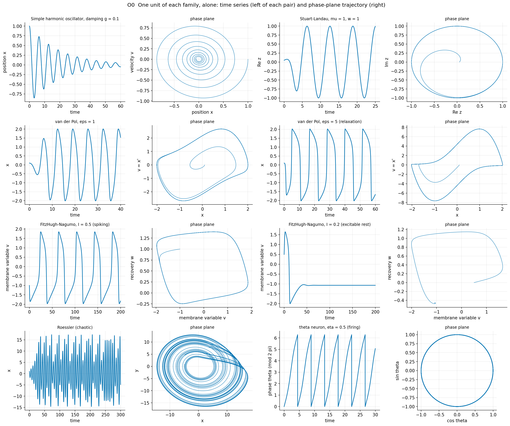
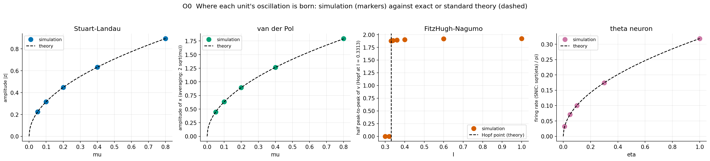
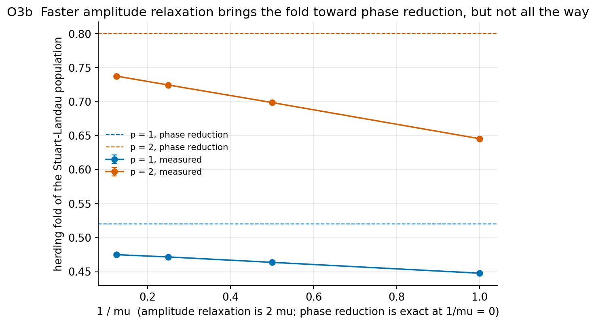
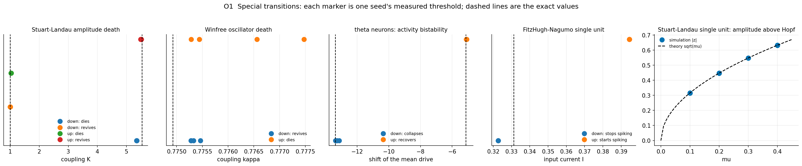

What this page is, and how it fits with the rest
The main project builds one model, the adaptive (herding) Kuramoto model, from a single oscillator up, in research/reference.html. This page does the same for every other oscillator family used in this project, so that each can be read on its own: what one unit does, where its oscillation is born, how a population of them synchronises or stops, what herding does to it, what exact theory says, and what the simulations measured. The results of the early-warning and market studies are on index.html; the files are described in README.md.
Notation is kept the same across families: N units, natural frequencies w_j, coupling strength K (lam when it
is a herding coupling), noise amplitude sigma, the mean field Z (the average of the units' complex signals or of
exp(i phase)), and the order parameter R = |Z| measured on phases. Equations are written in plain text:
x' is dx/dt, x'' the second derivative, ^ a power.
What an oscillator is: a cycle, a phase, and sometimes an amplitude
An oscillator is any system that settles onto a closed loop in its state space, a limit cycle, and goes round it forever. Where it is on the loop is its phase (an angle from 0 to 2 pi); how fast it goes round when left alone is its natural frequency. Some families have only a phase (Kuramoto, Winfree, theta neurons); the others also have an amplitude, the size of the loop, which can grow, shrink or vanish. The families here differ in exactly the ways that matter for synchronisation:
- Smooth limit cycles (Stuart-Landau, van der Pol at moderate eps): the loop is round and the phase advances evenly.
- Relaxation oscillators (van der Pol at large eps, FitzHugh-Nagumo): slow creeping followed by fast jumps; the phase advances very unevenly and coupling acts mostly during the jumps.
- Excitable units (FitzHugh-Nagumo below threshold, theta neurons with negative drive): at rest, but a large enough kick produces one full excursion, a spike.
- Chaotic oscillators (Roessler): the motion never repeats exactly, yet it still turns round a centre, so a phase can be defined and synchronised while the amplitude stays irregular.
- Linear oscillators (simple harmonic motion): no limit cycle at all; with damping they decay, without it they keep whatever amplitude they started with. They are the reference against which the nonlinear ones are compared.

What you are seeing
Pairs of panels. Left of each pair: the unit's main variable against time. Right: the same run as a curve in the phase plane (the two state variables against each other). A closed loop is a limit cycle; a spiral into a point is a damped rest state; the Roessler curve never closes. The theta neuron is drawn on the unit circle (cos theta, sin theta).
Significance
The shape of the loop decides how coupling acts: on a round loop (Stuart-Landau) a push changes the phase by the same amount everywhere; on a relaxation loop (van der Pol eps = 5, FitzHugh-Nagumo) only pushes near the jumps matter. That difference reappears in every threshold measured below.
Where a unit's oscillation is born
Changing one parameter can switch a unit's oscillation on or off. How it switches on decides how a unit, and later a population, behaves near the switch:
- Supercritical Hopf (Stuart-Landau, van der Pol): the rest state turns unstable through a pair of complex
eigenvalues and a small loop grows smoothly, amplitude proportional to the square root of the distance past the
point. Stuart-Landau is the normal form:
z' = (mu + i w) z - |z|^2 zgives |z| = sqrt(mu) exactly. - Linear Hopf (simple harmonic oscillator): at zero damping nothing limits the amplitude; there is no loop to settle on. It is the linearisation of every Hopf point, which is why its early-warning behaviour (Z3 on index.html) applies to all of them.
- Hopf with canard explosion (FitzHugh-Nagumo): the small loop born at the Hopf point grows into a full spike within an exponentially thin range of the input current, so in practice the unit jumps from rest to full spikes at I = 0.3312813374547458.
- Saddle-node on the invariant circle, SNIC (theta neuron): a resting point and a saddle merge on the circle; the firing rate rises from zero like sqrt(eta) / pi, so arbitrarily slow firing is possible.

What you are seeing
Markers: amplitude (or firing rate) measured by direct integration of one unit, after transients. Dashed: the exact or standard formula (sqrt(mu) for Stuart-Landau, 2 sqrt(mu) from averaging for van der Pol, sqrt(eta) / pi for the theta neuron, the Hopf point for FitzHugh-Nagumo).
Significance
The integrator reproduces every textbook result; the FitzHugh-Nagumo unit jumps to full spikes between I = 0.32 and 0.33, at the Hopf point.
| family | parameter | value | measured | theory | quantity |
|---|---|---|---|---|---|
| Stuart-Landau | mu | 0.0500 | 0.2236 | 0.2236 | amplitude |z| |
| van der Pol | mu | 0.0500 | 0.4472 | 0.4472 | amplitude of x (averaging: 2 sqrt(mu)) |
| Stuart-Landau | mu | 0.1000 | 0.3162 | 0.3162 | amplitude |z| |
| van der Pol | mu | 0.1000 | 0.6325 | 0.6325 | amplitude of x (averaging: 2 sqrt(mu)) |
| Stuart-Landau | mu | 0.2000 | 0.4472 | 0.4472 | amplitude |z| |
| van der Pol | mu | 0.2000 | 0.8946 | 0.8944 | amplitude of x (averaging: 2 sqrt(mu)) |
| Stuart-Landau | mu | 0.4000 | 0.6325 | 0.6325 | amplitude |z| |
| van der Pol | mu | 0.4000 | 1.2659 | 1.2649 | amplitude of x (averaging: 2 sqrt(mu)) |
| Stuart-Landau | mu | 0.8000 | 0.8944 | 0.8944 | amplitude |z| |
| van der Pol | mu | 0.8000 | 1.7941 | 1.7889 | amplitude of x (averaging: 2 sqrt(mu)) |
| FitzHugh-Nagumo | I | 0.3000 | 0.0000 | - | half peak-to-peak of v (Hopf at I = 0.3313) |
| FitzHugh-Nagumo | I | 0.3200 | 0.0000 | - | half peak-to-peak of v (Hopf at I = 0.3313) |
| FitzHugh-Nagumo | I | 0.3300 | 1.8744 | - | half peak-to-peak of v (Hopf at I = 0.3313) |
| FitzHugh-Nagumo | I | 0.3350 | 1.8801 | - | half peak-to-peak of v (Hopf at I = 0.3313) |
| FitzHugh-Nagumo | I | 0.3400 | 1.8836 | - | half peak-to-peak of v (Hopf at I = 0.3313) |
| FitzHugh-Nagumo | I | 0.3600 | 1.8919 | - | half peak-to-peak of v (Hopf at I = 0.3313) |
| FitzHugh-Nagumo | I | 0.4000 | 1.9005 | - | half peak-to-peak of v (Hopf at I = 0.3313) |
| FitzHugh-Nagumo | I | 0.6000 | 1.9170 | - | half peak-to-peak of v (Hopf at I = 0.3313) |
| FitzHugh-Nagumo | I | 1.0000 | 1.9214 | - | half peak-to-peak of v (Hopf at I = 0.3313) |
| theta neuron | eta | 0.0100 | 0.0324 | 0.0318 | firing rate (SNIC: sqrt(eta) / pi) |
| theta neuron | eta | 0.0500 | 0.0709 | 0.0712 | firing rate (SNIC: sqrt(eta) / pi) |
| theta neuron | eta | 0.1000 | 0.1003 | 0.1007 | firing rate (SNIC: sqrt(eta) / pi) |
| theta neuron | eta | 0.3000 | 0.1746 | 0.1743 | firing rate (SNIC: sqrt(eta) / pi) |
| theta neuron | eta | 1.0000 | 0.3183 | 0.3183 | firing rate (SNIC: sqrt(eta) / pi) |
Coupling a crowd, and measuring how synchronised it is
All populations here are coupled through a mean field: each unit feels the average of the others (or, on a network, of its neighbours). The coupling has three forms:
- Phase coupling (Kuramoto, with or without inertia):
K R sin(Psi - theta_j). - Diffusive coupling (Stuart-Landau, van der Pol, FitzHugh-Nagumo, Roessler):
K (X - x_j)in one variable: a unit is pulled toward the average state. It also damps each unit's own amplitude, which is what makes amplitude death possible. - Pulse coupling (Winfree, theta neurons): each unit sends a pulse that depends on its own phase, and its
sensitivity depends on the receiver's phase:
P(theta_k) Q(theta_j).
The order parameter is always R = |mean of exp(i phase)|, between 0 (phases spread, signals cancel) and 1 (all in step). What changes is how the phase is read off:
| family | phase used for R |
|---|---|
| Kuramoto, inertia, Winfree, theta | the phase variable itself |
| Stuart-Landau | the angle of z |
| van der Pol | the angle of (x, -v / w) in the phase plane |
| Roessler | the angle of (x, y) |
| FitzHugh-Nagumo | event based: 2 pi (time since the last spike) / (last period); the phase-plane angle is not used because it advances very unevenly along a relaxation cycle (an uncoupled population gave R = 0.27 with it, against 0.05 with the event phase) |
Frequencies are drawn as deterministic quantiles of one law per family (Lorentzian for Kuramoto and Stuart-Landau, because it makes the Ott-Antonsen theory exact; Gaussian or uniform for the others), and randomly assigned to units, so different seeds differ only in placement, initial phases and noise.
The herding term, for every family
The main project's crash mechanism is herding: a unit listens more when the others already agree. For every family the coupling is multiplied by the order parameter to a power p:
with R the global order parameter in the mean-field runs and the local order parameter r_i of node i's neighbours on networks (exactly the model of Zhang et al., PRL 114, 038701 (2015)). With p > 0 the coupling vanishes when R = 0, so the calm (incoherent) state is linearly stable at every coupling: synchrony cannot start by itself, only through a large enough fluctuation or shock. The synchronised state, once reached, survives down to a fold, below which it collapses. Between the fold and the coupling at which noise finally triggers synchrony both states coexist: the bistable window that the main project reads as the crash mechanism.
One number per family: phase reduction
When the coupling is weak compared with how fast a unit returns to its cycle, the state of a unit is described by its phase alone, and the effect of coupling depends only on the phase difference:
Z(psi) is the phase sensitivity (how much a small push at phase psi advances the phase), found by integrating the adjoint equation backward along the cycle, and G is the coupling. Keeping the first Fourier mode of H, every family becomes a Kuramoto model whose coupling is multiplied by a1, the coefficient of sin(phi) in H (with a small phase lag from the cos(phi) term). So every Kuramoto threshold carries over: the synchrony onset and the herding fold of a family are the Kuramoto values (for its own frequencies) divided by its a1. For Stuart-Landau a1 = 1 exactly, which the numerical adjoint reproduces to 1e-6; for the relaxation oscillators a1 is about 0.4 to 0.5. How far each family follows this rule, and why some do not, is measured in the chapters below and on the summary table.

What you are seeing
(a) H(phi) for each family, from the numerical adjoint; dashed: sin(phi), the Kuramoto case. (b) Each measured threshold against its phase-reduction prediction, log-log; circle: onset (p = 0, upward crossing of R = 0.5 in the atlas), square: herding fold at p = 1, diamond: at p = 2. Filled: the fold extrapolated to an infinitely slow sweep (O3c); open, faint: the fold at the atlas sweep speed. Dashed: perfect agreement.
Significance
Onsets fall on the diagonal for every family. Herding folds, once the delay caused by the finite sweep speed is removed, lie within a few percent of the prediction for Kuramoto, van der Pol and Roessler (p = 1: +0.5%, -0.3%, +2.6%). Two families stay below it: Stuart-Landau (-10%) and the relaxation oscillator FitzHugh-Nagumo (-19%). The open markers show how strongly a fixed sweep speed lowers the measured fold of the slow families.
Simple harmonic oscillator (the linear reference)
One unit
Damped harmonic motion driven by noise. For g > 0 the rest state is stable and the amplitude decays at rate g/2; at g = 0 the pair of eigenvalues -g/2 +- i sqrt(w0^2 - g^2/4) reaches the imaginary axis: the linear version of every Hopf point. Exact stationary variance sigma^2 / (2 g w0^2).
A population
Used as a single unit only. It is the reference for early warnings before any oscillatory loss of stability. Z3 on index.html derives exactly that lag-1 autocorrelation of its position falls, not rises, as the damping vanishes, at every sampling interval below the Nyquist limit, while that of its velocity rises up to w dt = 2.03.
Early warnings before this transition (Z1, AUC against ramps away from the transition)
| signal | indicator | AUC |
|---|---|---|
| collective | lag-1 AC | 0.17 |
| collective | AR(2) rate | 1.00 |
| collective | |skewness| | 0.67 |
| collective | spectral peak | 0.97 |
| collective | variance | 1.00 |
| one unit | lag-1 AC | 0.17 |
| one unit | AR(2) rate | 1.00 |
| one unit | |skewness| | 0.67 |
| one unit | spectral peak | 0.97 |
| one unit | variance | 1.00 |
| 8 units | VAR(1) rate | - |
Stuart-Landau oscillator: the normal form of every smooth oscillation
One unit
One complex variable z = x + i y. Below mu = 0 the rest state is stable; above it a circular cycle of radius sqrt(mu) rotating at w. Every smooth oscillation onset looks like this near its Hopf point, which is why it is the standard model of a generic oscillator with an amplitude.
A population
Diffusive mean-field coupling pulls each z_j toward the average Z and also damps it by K. Three behaviours, depending on the frequency spread: synchrony (narrow spread, Lorentzian half-width 0.1), amplitude death (wide spread, frequencies uniform on [-4, 4]: every unit stops, z_j = 0, for K between 1 and an upper edge), and with herding an explosive collapse of synchrony.
Measured transitions (O1 atlas, N = 500, 4 seeds) against phase reduction
| herding exponent p | jump up from calm (R reaches 0.5) | seeds that jumped (of 4) | collapse coming down (R falls below 0.5) | sd | phase reduction (p = 0: K at R = 0.5; p >= 1: fold) |
|---|---|---|---|---|---|
| 0 | 0.2601 | 4 | 0.2691 | 0.0012 | 0.2667 |
| 1 | 1.3472 | 4 | 0.4476 | 0.0006 | 0.5195 |
| 2 | - | 0 | 0.6447 | 0.0011 | 0.7998 |
Phase reduction, computed by adjoint (numerical): first odd Fourier coefficient of the interaction function a1 = 1.0000, phase lag alpha = +0.0010 rad. Every Kuramoto threshold of this family is the Kuramoto value divided by a1 (for the same frequencies).
Amplitude death (frequencies uniform on [-4, 4])
Exact window from linear stability: 1.0 < K < 5.529201935930301. Measured: death begins at 1.034 going up and ends at 1.004 coming down (no hysteresis at the lower edge); oscillation returns at 5.499 going up, but coming down from strong coupling death starts only at 5.351: a small hysteresis loop at the upper edge that linear stability cannot see. A time step of 0.005 is needed there (0.02 moves the edge to 4.98).

What you are seeing
Measured herding fold (mean and sd of 3 seeds) against 1/mu; phase reduction is exact at 1/mu = 0. Dashed lines: the phase-reduction folds.
Significance
Faster amplitude relaxation moves the fold toward phase reduction but levels off below it. These runs use the atlas sweep speed; O3c shows that speed lowers this fold by about 0.019, and even after that correction mu = 1 stays 10% below phase reduction. One candidate: this mean-field kernel measures herding with the amplitude-weighted |Z| / mean |z|, not with the phase order parameter of the theory; the network runs of O6 use the phase order parameter and test it.
Shocks (O4 a)
Fraction of runs that end synchronised (a persistent crash) after a fraction phi of a calm population is put at one phase, at couplings below (0.8) and inside the bistable window (multiples of the slow-sweep fold).
| coupling / fold | phi = 0.1 | phi = 0.2 | phi = 0.35 | phi = 0.5 |
|---|---|---|---|---|
| 0.80 | 0.00 | 0.00 | 0.00 | 0.00 |
| 1.20 | 0.00 | 0.00 | 0.33 | 1.00 |
| 1.60 | 0.00 | 0.00 | 1.00 | 1.00 |
| 2.40 | 0.67 | 1.00 | 1.00 | 1.00 |
Circuit breakers (O4 b)
A synchronised population is uncoupled for a time, then coupling resumes; the shortest halt (in units of 1 / frequency spread, from the grid 0.25 to 4) after which most runs stay calm, against the prediction R(tau*) = R_u(lam).
| coupling / fold | shortest halt that worked (x 1/spread) | predicted tau* (phase reduction) |
|---|---|---|
| 1.200 | 1.000 | 0.810 |
| 1.600 | 2.000 | 1.220 |
| 2.400 | 2.000 | 1.630 |
Rate (O4 c): coupling ramped from 0.5 to 1.6 times the fold from a calm start; fraction of runs that jumped to synchrony: 0.00 over 20 / spread, 0.00 over 200 / spread. Herding keeps the calm state linearly stable, so any jump is noise-induced.
Sparse networks (O6): designed, not yet run
Design: herding fold on random regular graphs, k = 8 to 64 (N = 2000) and up to 192 (N = 20000), relative to the complete graph; phase reduction predicts the same 1/k coefficient for every family. Script and expected output are in README.md; the run was moved to the Ada cluster (ADA_COMPUTE.md, item A7) and this block fills in when the page is rebuilt with its result file.
Frequency-degree correlation on a scale-free network (O5)
Largest gap between the upward and downward R curves: 0.79 with frequency increasing with degree, 0.19 with the frequencies shuffled (mean of 2 seeds).
Early warnings before this transition (Z1, AUC against ramps away from the transition)
| signal | indicator | AUC |
|---|---|---|
| collective | lag-1 AC | 1.00 |
| collective | AR(2) rate | 0.99 |
| collective | |skewness| | 0.87 |
| collective | spectral peak | 0.99 |
| collective | variance | 1.00 |
| one unit | lag-1 AC | 1.00 |
| one unit | AR(2) rate | 1.00 |
| one unit | |skewness| | 0.55 |
| one unit | spectral peak | 0.98 |
| one unit | variance | 1.00 |
| 8 units | VAR(1) rate | 1.00 |
Separability (O8): coupling -x + y is not product-separable (separable rank 2), like Kuramoto.
Papers in references/: bi2014_explosive_oscillation_death, koseska2013 (not on arXiv), pikovsky_rosenblum2015_global_coupling.
van der Pol oscillator: from smooth to relaxation
One unit
Negative damping at small amplitude, positive at large amplitude: a self-sustained cycle of amplitude about 2. For eps near 1 the cycle is smooth; for large eps it becomes a relaxation oscillation (slow creep, fast jump). With (mu - x^2) instead of (1 - x^2) it has a Hopf point at mu = 0 and amplitude 2 sqrt(mu) just after.
A population
Coupled through the velocity (dissipative coupling): coupling through position alone is reactive and does not synchronise them (checked). Frequencies Gaussian, mean 1, sd 0.05, eps = 1.
Measured transitions (O1 atlas, N = 500, 4 seeds) against phase reduction
| herding exponent p | jump up from calm (R reaches 0.5) | seeds that jumped (of 4) | collapse coming down (R falls below 0.5) | sd | phase reduction (p = 0: K at R = 0.5; p >= 1: fold) |
|---|---|---|---|---|---|
| 0 | 0.1860 | 4 | 0.1699 | 0.0006 | 0.1834 |
| 1 | 1.0633 | 4 | 0.2496 | 0.0002 | 0.2885 |
| 2 | - | 0 | 0.3078 | 0.0001 | 0.3467 |
Phase reduction, computed by adjoint (numerical): first odd Fourier coefficient of the interaction function a1 = 0.4987, phase lag alpha = -0.1835 rad. Every Kuramoto threshold of this family is the Kuramoto value divided by a1 (for the same frequencies).
Shocks (O4 a)
Fraction of runs that end synchronised (a persistent crash) after a fraction phi of a calm population is put at one phase, at couplings below (0.8) and inside the bistable window (multiples of the slow-sweep fold).
| coupling / fold | phi = 0.1 | phi = 0.2 | phi = 0.35 | phi = 0.5 |
|---|---|---|---|---|
| 0.80 | 0.00 | 0.00 | 0.00 | 0.00 |
| 1.20 | 0.00 | 0.00 | 0.00 | 1.00 |
| 1.60 | 0.00 | 0.00 | 1.00 | 1.00 |
| 2.40 | 0.33 | 1.00 | 1.00 | 1.00 |
Circuit breakers (O4 b)
A synchronised population is uncoupled for a time, then coupling resumes; the shortest halt (in units of 1 / frequency spread, from the grid 0.25 to 4) after which most runs stay calm, against the prediction R(tau*) = R_u(lam).
| coupling / fold | shortest halt that worked (x 1/spread) | predicted tau* (phase reduction) |
|---|---|---|
| 1.200 | 2.000 | 1.100 |
| 1.600 | 2.000 | 1.380 |
| 2.400 | 4.000 | 1.660 |
Rate (O4 c): coupling ramped from 0.5 to 1.6 times the fold from a calm start; fraction of runs that jumped to synchrony: 0.00 over 20 / spread, 0.00 over 200 / spread. Herding keeps the calm state linearly stable, so any jump is noise-induced.
Sparse networks (O6): designed, not yet run
Design: herding fold on random regular graphs, k = 8 to 64 (N = 2000) and up to 192 (N = 20000), relative to the complete graph; phase reduction predicts the same 1/k coefficient for every family. Script and expected output are in README.md; the run was moved to the Ada cluster (ADA_COMPUTE.md, item A7) and this block fills in when the page is rebuilt with its result file.
Frequency-degree correlation on a scale-free network (O5)
Largest gap between the upward and downward R curves: 0.87 with frequency increasing with degree, 0.43 with the frequencies shuffled (mean of 2 seeds).
Early warnings before this transition (Z1, AUC against ramps away from the transition)
| signal | indicator | AUC |
|---|---|---|
| collective | lag-1 AC | 0.90 |
| collective | AR(2) rate | 0.87 |
| collective | |skewness| | 0.92 |
| collective | spectral peak | 0.80 |
| collective | variance | 0.93 |
| one unit | lag-1 AC | 0.55 |
| one unit | AR(2) rate | 1.00 |
| one unit | |skewness| | 0.43 |
| one unit | spectral peak | 0.20 |
| one unit | variance | 0.00 |
| 8 units | VAR(1) rate | 0.47 |
Separability (O8): coupling -x + y is not product-separable (separable rank 2), like Kuramoto.
FitzHugh-Nagumo: an excitable neuron model
One unit
A fast membrane variable v and a slow recovery variable w. Below I = 0.3313 (the Hopf point) the unit rests but is excitable: a large enough kick produces one spike. Above it, it fires periodically (period 36 to 47 here); the small Hopf cycle explodes into full spikes within an exponentially thin range of I (canard explosion).
A population
Diffusive coupling through v, as for electrically coupled neurons. Each unit has its own input current in [0.34, 0.9], which gives frequencies spread by about +- 12 percent. Phase is event based (see step 3).
Measured transitions (O1 atlas, N = 500, 4 seeds) against phase reduction
| herding exponent p | jump up from calm (R reaches 0.5) | seeds that jumped (of 4) | collapse coming down (R falls below 0.5) | sd | phase reduction (p = 0: K at R = 0.5; p >= 1: fold) |
|---|---|---|---|---|---|
| 0 | 0.0398 | 4 | 0.0235 | 0.0002 | 0.0470 |
| 1 | 0.2455 | 4 | 0.0237 | 0.0001 | 0.0633 |
| 2 | - | 0 | 0.0239 | 0.0002 | 0.0809 |
Phase reduction, computed by adjoint (numerical): first odd Fourier coefficient of the interaction function a1 = 0.4004, phase lag alpha = +0.0262 rad. Every Kuramoto threshold of this family is the Kuramoto value divided by a1 (for the same frequencies).
Single unit swept slowly: spikes start at I = 0.394 going up (after the Hopf point 0.3313: a slowly ramped unit passes a Hopf point late) and stop at 0.323 coming down (the large cycle survives below the Hopf point).
Shocks (O4 a)
Fraction of runs that end synchronised (a persistent crash) after a fraction phi of a calm population is put at one phase, at couplings below (0.8) and inside the bistable window (multiples of the slow-sweep fold).
| coupling / fold | phi = 0.1 | phi = 0.2 | phi = 0.35 | phi = 0.5 |
|---|---|---|---|---|
| 0.80 | 0.00 | 0.00 | 0.00 | 0.00 |
| 1.20 | 1.00 | 1.00 | 1.00 | 1.00 |
| 1.60 | 1.00 | 1.00 | 1.00 | 1.00 |
| 2.40 | 1.00 | 1.00 | 1.00 | 1.00 |
Circuit breakers (O4 b)
A synchronised population is uncoupled for a time, then coupling resumes; the shortest halt (in units of 1 / frequency spread, from the grid 0.25 to 4) after which most runs stay calm, against the prediction R(tau*) = R_u(lam).
| coupling / fold | shortest halt that worked (x 1/spread) | predicted tau* (phase reduction) |
|---|---|---|
| 1.200 | - | - |
| 1.600 | - | 1.190 |
| 2.400 | - | 2.300 |
Rate (O4 c): coupling ramped from 0.5 to 1.6 times the fold from a calm start; fraction of runs that jumped to synchrony: 0.33 over 20 / spread, 0.67 over 200 / spread. Herding keeps the calm state linearly stable, so any jump is noise-induced.
Sparse networks (O6): designed, not yet run
Design: herding fold on random regular graphs, k = 8 to 64 (N = 2000) and up to 192 (N = 20000), relative to the complete graph; phase reduction predicts the same 1/k coefficient for every family. Script and expected output are in README.md; the run was moved to the Ada cluster (ADA_COMPUTE.md, item A7) and this block fills in when the page is rebuilt with its result file.
Frequency-degree correlation on a scale-free network (O5)
Largest gap between the upward and downward R curves: 0.14 with frequency increasing with degree, 0.13 with the frequencies shuffled (mean of 2 seeds).
Separability (O8): coupling -x + y is not product-separable (separable rank 2), like Kuramoto.
Kuramoto model: phases only
One unit
A unit is a pure phase rotating at w_j. It is what every limit-cycle family reduces to when coupling is weak (step 5), and the model of the main project.
A population
Lorentzian frequencies of half-width 0.5. p = 0: continuous synchrony onset at K_c = 2 (gamma + sigma^2/2) with R = sqrt(1 - K_c/K) (Ott-Antonsen, exact). p > 0: explosive, fold lam_b = gamma' (p+2) ((p+2)/p)^(p/2) (Zou and Wang 2020).
Measured transitions (O1 atlas, N = 500, 4 seeds) against phase reduction
| herding exponent p | jump up from calm (R reaches 0.5) | seeds that jumped (of 4) | collapse coming down (R falls below 0.5) | sd | phase reduction (p = 0: K at R = 0.5; p >= 1: fold) |
|---|---|---|---|---|---|
| 0 | 1.3313 | 4 | 1.3484 | 0.0059 | 1.3333 |
| 1 | 7.6752 | 3 | 2.5556 | 0.0005 | 2.5975 |
| 2 | - | 0 | 3.9481 | 0.0020 | 3.9990 |
Phase reduction, computed by exact (it is a phase model): first odd Fourier coefficient of the interaction function a1 = 1.0000, phase lag alpha = +0.0000 rad. Every Kuramoto threshold of this family is the Kuramoto value divided by a1 (for the same frequencies).
Shocks (O4 a)
Fraction of runs that end synchronised (a persistent crash) after a fraction phi of a calm population is put at one phase, at couplings below (0.8) and inside the bistable window (multiples of the slow-sweep fold).
| coupling / fold | phi = 0.1 | phi = 0.2 | phi = 0.35 | phi = 0.5 |
|---|---|---|---|---|
| 0.80 | 0.00 | 0.00 | 0.00 | 0.00 |
| 1.20 | 0.00 | 0.00 | 0.33 | 0.67 |
| 1.60 | 0.33 | 0.33 | 1.00 | 1.00 |
| 2.40 | 1.00 | 1.00 | 1.00 | 1.00 |
Circuit breakers (O4 b)
A synchronised population is uncoupled for a time, then coupling resumes; the shortest halt (in units of 1 / frequency spread, from the grid 0.25 to 4) after which most runs stay calm, against the prediction R(tau*) = R_u(lam).
| coupling / fold | shortest halt that worked (x 1/spread) | predicted tau* (phase reduction) |
|---|---|---|
| 1.200 | 1.000 | 1.010 |
| 1.600 | 2.000 | 1.330 |
| 2.400 | 2.000 | 1.850 |
Rate (O4 c): coupling ramped from 0.5 to 1.6 times the fold from a calm start; fraction of runs that jumped to synchrony: 0.00 over 20 / spread, 0.00 over 200 / spread. Herding keeps the calm state linearly stable, so any jump is noise-induced.
Sparse networks (O6): designed, not yet run
Design: herding fold on random regular graphs, k = 8 to 64 (N = 2000) and up to 192 (N = 20000), relative to the complete graph; phase reduction predicts the same 1/k coefficient for every family. Script and expected output are in README.md; the run was moved to the Ada cluster (ADA_COMPUTE.md, item A7) and this block fills in when the page is rebuilt with its result file.
Frequency-degree correlation on a scale-free network (O5)
Largest gap between the upward and downward R curves: 0.82 with frequency increasing with degree, 0.09 with the frequencies shuffled (mean of 2 seeds).
Early warnings before this transition (Z1, AUC against ramps away from the transition)
| signal | indicator | AUC |
|---|---|---|
| collective | lag-1 AC | 1.00 |
| collective | AR(2) rate | 0.23 |
| collective | |skewness| | 0.62 |
| collective | spectral peak | 0.55 |
| collective | variance | 1.00 |
| one unit | lag-1 AC | 0.82 |
| one unit | AR(2) rate | 0.57 |
| one unit | |skewness| | 0.54 |
| one unit | spectral peak | 0.50 |
| one unit | variance | 0.96 |
| 8 units | VAR(1) rate | 0.93 |
Separability (O8): coupling -sin(x - y) is not product-separable (separable rank 2), like Kuramoto. With herding the input is not even pairwise additive.
Papers in references/: ott_antonsen2008, rodrigues2016.
Kuramoto with inertia: the swing equation of power grids
One unit
Each unit is a damped rotor (a generator in a power grid). Inertia lets a unit keep rotating after it is pulled, so locking and unlocking happen at different couplings even without herding.
A population
Gaussian frequencies, sd 1. Going up, the incoherent state loses stability where K_c = 2 / [pi g(0) - m integral g(w) / (1 + m^2 w^2) dw] (Gupta, Campa and Ruffo 2014); coming down, every unit with |w| < K R stays locked (Tanaka, Lichtenberg and Oishi 1997).
Measured transitions (O1 atlas, N = 500, 4 seeds) against phase reduction
| herding exponent p | jump up from calm (R reaches 0.5) | seeds that jumped (of 4) | collapse coming down (R falls below 0.5) | sd | phase reduction (p = 0: K at R = 0.5; p >= 1: fold) |
|---|---|---|---|---|---|
| 0 | 3.7106 | 4 | 1.8862 | 0.0010 | 1.7479 |
| 1 | - | 0 | 2.7285 | 0.0008 | 2.7490 |
| 2 | - | 0 | 3.2407 | 0.0023 | 3.3041 |
For this family the theory column is not phase reduction. At p = 0 it is the coupling at which the locked-state self-consistency gives R = 0.5 (compare with the downward collapse); the jump up is predicted where the calm state loses linear stability, K = 5.306, against 3.711 measured: the synchronised state already exists below that point, so a finite population jumps early. At p = 1 and 2 it is the fold of the same self-consistency (the locked state of the inertial model is the Kuramoto one).
Shocks (O4 a)
Fraction of runs that end synchronised (a persistent crash) after a fraction phi of a calm population is put at one phase, at couplings below (0.8) and inside the bistable window (multiples of the slow-sweep fold).
| coupling / fold | phi = 0.1 | phi = 0.2 | phi = 0.35 | phi = 0.5 |
|---|---|---|---|---|
| 0.80 | 0.00 | 0.00 | 0.00 | 0.00 |
| 1.20 | 0.00 | 0.00 | 0.00 | 0.00 |
| 1.60 | 0.00 | 0.00 | 0.00 | 0.00 |
| 2.40 | 0.00 | 0.00 | 0.00 | 0.00 |
Circuit breakers (O4 b)
A synchronised population is uncoupled for a time, then coupling resumes; the shortest halt (in units of 1 / frequency spread, from the grid 0.25 to 4) after which most runs stay calm, against the prediction R(tau*) = R_u(lam).
| coupling / fold | shortest halt that worked (x 1/spread) | predicted tau* (phase reduction) |
|---|---|---|
| 1.200 | 0.250 | - |
| 1.600 | 0.250 | - |
| 2.400 | 1.000 | - |
Rate (O4 c): coupling ramped from 0.5 to 1.6 times the fold from a calm start; fraction of runs that jumped to synchrony: 0.00 over 20 / spread, 0.00 over 200 / spread. Herding keeps the calm state linearly stable, so any jump is noise-induced.
Sparse networks (O6): designed, not yet run
Design: herding fold on random regular graphs, k = 8 to 64 (N = 2000) and up to 192 (N = 20000), relative to the complete graph; phase reduction predicts the same 1/k coefficient for every family. Script and expected output are in README.md; the run was moved to the Ada cluster (ADA_COMPUTE.md, item A7) and this block fills in when the page is rebuilt with its result file.
Early warnings before this transition (Z1, AUC against ramps away from the transition)
| signal | indicator | AUC |
|---|---|---|
| collective | lag-1 AC | 1.00 |
| collective | AR(2) rate | 0.72 |
| collective | |skewness| | 0.89 |
| collective | spectral peak | 1.00 |
| collective | variance | 1.00 |
| one unit | lag-1 AC | 1.00 |
| one unit | AR(2) rate | 0.00 |
| one unit | |skewness| | 0.50 |
| one unit | spectral peak | 0.49 |
| one unit | variance | 0.51 |
| 8 units | VAR(1) rate | 1.00 |
Separability (O8): coupling -sin(x - y) is not product-separable (separable rank 2), like Kuramoto. With herding the input is not even pairwise additive.
Papers in references/: gupta2014_inertia_review, acebron2000_inertia, olmi2014.
Winfree model: pulse coupling and oscillator death
One unit
Each unit sends a pulse 1 + cos(theta) that peaks when it fires, and responds with a sensitivity -sin(theta). This is the original model of collective synchrony (Winfree 1967).
A population
Frequencies uniform on [0.9, 1.1]. As kappa grows the locked population slows down and finally stops: oscillator death, every unit at a stable fixed point. The death state exists iff kappa >= min over x of x / sigma(x), sigma(x) = 1 + mean sqrt(1 - (w/x)^2).
Exact death threshold 0.7749281411305424; measured with a slow ramp: dies at 0.776, revives at 0.775 (4 seeds each). Near death the period diverges, so a cutoff on the mean velocity that is too high (0.3) fires early (0.752).
Signal propagation (O9)
Response time of a node to a clamped neighbour against its degree, tau ~ S^theta, with A2's protocol.
| network | theta measured | CI low | CI high | Hens prediction | slope of ln 2 / |J_ii| | corr(log tau, log local) | nodes |
|---|---|---|---|---|---|---|---|
| SF | -1.022 | -1.025 | -1.020 | -1.000 | -1.022 | 1.000 | 358 |
Early warnings before this transition (Z1, AUC against ramps away from the transition)
| signal | indicator | AUC |
|---|---|---|
| collective | lag-1 AC | 1.00 |
| collective | AR(2) rate | 0.00 |
| collective | |skewness| | 1.00 |
| collective | spectral peak | 0.23 |
| collective | variance | 0.71 |
| one unit | lag-1 AC | 1.00 |
| one unit | AR(2) rate | 0.20 |
| one unit | |skewness| | 0.37 |
| one unit | spectral peak | 0.00 |
| one unit | variance | 0.01 |
| 8 units | VAR(1) rate | 0.14 |
Separability (O8): coupling -(cos(y) + 1)*sin(x) is product-separable (rank 1): inside the class of Hens et al., Nat. Phys. 15, 403 (2019). With herding the input is not even pairwise additive.
Papers in references/: ariaratnam_strogatz2001_winfree, pazo_montbrio2014_winfree_oa.
Roessler oscillator: phase synchronisation of chaos
One unit
A chaotic attractor that still turns round a centre in the (x, y) plane, so its angle is a usable phase. The phase can lock while the amplitude stays chaotic (phase synchronisation, Rosenblum, Pikovsky and Kurths, PRL 76, 1804 (1996), not on arXiv).
A population
Coupled through x; frequencies Gaussian, mean 1, sd 0.02. There is no strict phase sensitivity for chaos; for x-coupling of a phase-coherent attractor the angular equation gives a1 = 1/2 if all radii are equal, used as an approximation (Imai, Suetani and Aoyagi 2021 give the systematic version).
Measured transitions (O1 atlas, N = 500, 4 seeds) against phase reduction
| herding exponent p | jump up from calm (R reaches 0.5) | seeds that jumped (of 4) | collapse coming down (R falls below 0.5) | sd | phase reduction (p = 0: K at R = 0.5; p >= 1: fold) |
|---|---|---|---|---|---|
| 0 | 0.0852 | 4 | 0.0629 | 0.0003 | 0.0699 |
| 1 | 0.4045 | 4 | 0.0815 | 0.0004 | 0.1100 |
| 2 | - | 0 | 0.0986 | 0.0004 | 0.1322 |
Phase reduction, computed by approximate (equal radii, phase-coherent attractor): first odd Fourier coefficient of the interaction function a1 = 0.5000, phase lag alpha = +0.0000 rad. Every Kuramoto threshold of this family is the Kuramoto value divided by a1 (for the same frequencies).
Shocks (O4 a)
Fraction of runs that end synchronised (a persistent crash) after a fraction phi of a calm population is put at one phase, at couplings below (0.8) and inside the bistable window (multiples of the slow-sweep fold).
| coupling / fold | phi = 0.1 | phi = 0.2 | phi = 0.35 | phi = 0.5 |
|---|---|---|---|---|
| 0.80 | 0.00 | 0.00 | 0.00 | 0.00 |
| 1.20 | 0.00 | 0.00 | 0.00 | 1.00 |
| 1.60 | 0.00 | 0.00 | 1.00 | 1.00 |
| 2.40 | 0.67 | 1.00 | 1.00 | 1.00 |
Circuit breakers (O4 b)
A synchronised population is uncoupled for a time, then coupling resumes; the shortest halt (in units of 1 / frequency spread, from the grid 0.25 to 4) after which most runs stay calm, against the prediction R(tau*) = R_u(lam).
| coupling / fold | shortest halt that worked (x 1/spread) | predicted tau* (phase reduction) |
|---|---|---|
| 1.200 | 1.000 | 1.140 |
| 1.600 | 2.000 | 1.410 |
| 2.400 | 2.000 | 1.690 |
Rate (O4 c): coupling ramped from 0.5 to 1.6 times the fold from a calm start; fraction of runs that jumped to synchrony: 0.00 over 20 / spread, 0.00 over 200 / spread. Herding keeps the calm state linearly stable, so any jump is noise-induced.
Sparse networks (O6): designed, not yet run
Design: herding fold on random regular graphs, k = 8 to 64 (N = 2000) and up to 192 (N = 20000), relative to the complete graph; phase reduction predicts the same 1/k coefficient for every family. Script and expected output are in README.md; the run was moved to the Ada cluster (ADA_COMPUTE.md, item A7) and this block fills in when the page is rebuilt with its result file.
Frequency-degree correlation on a scale-free network (O5)
Largest gap between the upward and downward R curves: 0.78 with frequency increasing with degree, 0.68 with the frequencies shuffled (mean of 2 seeds).
Early warnings before this transition (Z1, AUC against ramps away from the transition)
| signal | indicator | AUC |
|---|---|---|
| collective | lag-1 AC | 0.95 |
| collective | AR(2) rate | 0.98 |
| collective | |skewness| | 0.86 |
| collective | spectral peak | 0.88 |
| collective | variance | 0.96 |
| one unit | lag-1 AC | 1.00 |
| one unit | AR(2) rate | 1.00 |
| one unit | |skewness| | 0.00 |
| one unit | spectral peak | 0.86 |
| one unit | variance | 1.00 |
| 8 units | VAR(1) rate | 0.98 |
Separability (O8): coupling -x + y is not product-separable (separable rank 2), like Kuramoto.
Papers in references/: imai2021_chaotic_phase_description.
Theta neurons: a bistable network of spiking units
One unit
The normal form of a neuron that starts firing through a SNIC: rest below eta = 0, firing at rate sqrt(eta)/pi above (step 2).
A population
Lorentzian drives centred at -5 + shift, half-width 0.5, J = 15. Exactly reducible by Ott-Antonsen (Luke, Barreto and So 2013; Montbrio, Pazo and Roxin 2015 for the equivalent QIF network): a high-activity and a quiet state coexist over a range of the drive; the active state collapses at a fold.
Ott-Antonsen folds: the active state collapses at shift -13.375, the quiet state recovers at -5.125. Measured (N = 500, 4 seeds): -13.263 and -5.094.
Signal propagation (O9)
Response time of a node to a clamped neighbour against its degree, tau ~ S^theta, with A2's protocol.
| network | theta measured | CI low | CI high | Hens prediction | slope of ln 2 / |J_ii| | corr(log tau, log local) | nodes |
|---|---|---|---|---|---|---|---|
| ER | 0.098 | 0.093 | 0.104 | - | 0.093 | 0.998 | 431 |
Early warnings before this transition (Z1, AUC against ramps away from the transition)
| signal | indicator | AUC |
|---|---|---|
| collective | lag-1 AC | 0.00 |
| collective | AR(2) rate | 0.99 |
| collective | |skewness| | 0.38 |
| collective | spectral peak | 0.67 |
| collective | variance | 0.94 |
| one unit | lag-1 AC | 0.00 |
| one unit | AR(2) rate | 0.95 |
| one unit | |skewness| | 0.32 |
| one unit | spectral peak | 0.15 |
| one unit | variance | 1.00 |
| 8 units | VAR(1) rate | 0.00 |
Separability (O8): coupling (1 - cos(y))**2*(2*cos(x)/3 + 2/3) is product-separable (rank 1): inside the class of Hens et al., Nat. Phys. 15, 403 (2019). With herding the input is not even pairwise additive.
Papers in references/: montbrio2015_qif_meanfield, luke2013 (not on arXiv).
Summary: every family against its theory
Measured thresholds (atlas, mean of 4 seeds) against phase reduction. The onset is where R first reaches 0.5 going up with plain coupling; the folds are where R falls below 0.5 coming down with herding.
| family | a1 | onset (p = 0) | predicted | fold p = 1 | predicted | measured / predicted | fold p = 2 | predicted |
|---|---|---|---|---|---|---|---|---|
| Kuramoto | 1.0000 | 1.3313 | 1.3333 | 2.5556 | 2.5975 | 0.9839 | 3.9481 | 3.9990 |
| Stuart-Landau | 1.0000 | 0.2601 | 0.2667 | 0.4476 | 0.5195 | 0.8615 | 0.6447 | 0.7998 |
| van der Pol | 0.4987 | 0.1860 | 0.1834 | 0.2496 | 0.2885 | 0.8654 | 0.3078 | 0.3467 |
| Roessler | 0.5000 | 0.0852 | 0.0699 | 0.0815 | 0.1100 | 0.7412 | 0.0986 | 0.1322 |
| FitzHugh-Nagumo | 0.4004 | 0.0398 | 0.0470 | 0.0237 | 0.0633 | 0.3740 | 0.0239 | 0.0809 |
| Kuramoto with inertia | - | 3.7106 | 1.7479 | 2.7285 | 2.7490 | 0.9925 | 3.2407 | 3.3041 |

What you are seeing
One panel per family. R (order parameter) against the coupling, mean of 4 seeds. Solid: swept up from a calm start; dashed: swept down from synchrony. Grey p = 0, blue p = 1, red p = 2. Dotted verticals: phase-reduction folds (p = 1 blue, p = 2 red; grey for inertia: the linear-stability onset); circle: predicted onset at R = 0.5.
Significance
Herding turns synchronisation explosive in every family: the upward sweep stays calm far past the fold (at p = 2 it never synchronises in range), the downward sweep collapses abruptly. Kuramoto with inertia is already hysteretic at p = 0, and FitzHugh-Nagumo shows a small loop even at p = 0. The downward collapses in this figure come later than the true folds because the sweep is finite; O3c measures that delay and removes it.

What you are seeing
Each marker is one seed's measured threshold, grouped by direction of the sweep and event; dashed lines are the exact values (linear stability of amplitude death, existence of the Winfree death state, Ott-Antonsen folds of the theta network, the FitzHugh-Nagumo Hopf point). Last panel: Stuart-Landau amplitude against sqrt(mu).
Significance
Every exact threshold is reproduced, after two fixes recorded in the code: a smaller time step at the upper edge of amplitude death and a lower velocity cutoff for Winfree death.
Folds extrapolated to an infinitely slow sweep (O3c)
| family | p | fold, fastest sweep | fold, slowest sweep | extrapolated | se | phase reduction | relative gap |
|---|---|---|---|---|---|---|---|
| FitzHugh-Nagumo, single | 1 | 0.0390 | 0.0496 | 0.0513 | 0.0003 | 0.0633 | -0.1891 |
| FitzHugh-Nagumo, single | 2 | 0.0493 | 0.0622 | 0.0645 | 0.0001 | 0.0809 | -0.2028 |
| kuramoto | 1 | 2.5717 | 2.6051 | 2.6100 | 0.0014 | 2.5975 | 0.0048 |
| kuramoto | 2 | 3.9704 | 4.0132 | 4.0219 | 0.0018 | 3.9990 | 0.0057 |
| rossler | 1 | 0.0992 | 0.1107 | 0.1128 | 0.0001 | 0.1100 | 0.0257 |
| rossler | 2 | 0.1260 | 0.1387 | 0.1411 | 0.0001 | 0.1322 | 0.0678 |
| sl | 1 | 0.4543 | 0.4660 | 0.4678 | 0.0005 | 0.5195 | -0.0996 |
| sl | 2 | 0.6539 | 0.6716 | 0.6751 | 0.0006 | 0.7998 | -0.1559 |
| vdp | 1 | 0.2687 | 0.2847 | 0.2875 | 0.0002 | 0.2885 | -0.0032 |
| vdp | 2 | 0.3387 | 0.3566 | 0.3600 | 0.0001 | 0.3467 | 0.0383 |

What you are seeing
Measured fold divided by the phase-reduction fold, against (speed / fold)^(2/3); lines are fits fold_0 - c v^(2/3), meeting the left axis at the extrapolated slow-sweep fold. Dashed: phase reduction.
Significance
Shows how much of each family's gap to phase reduction is the finite sweep speed (slow passage through the fold) and how much is real.
The Kuramoto pipeline and its counterpart for every oscillator
| main project | counterpart here | status |
|---|---|---|
| A1 to A11 (basic ideas) | steps 0 to 5 of this page | done |
| B1 simulator, tests to 1e-12 | zoo.py, zoo_net.py; tests/test_oscillators.py (exact reproduction of Z1, complete-graph equivalence, kernels against exact variances and branches) | done |
| B2 run directories, esfc audit | data/ files with logs in data/logs/; no per-run directories | partial |
| B3 interactive simulation | demo.html (all families) | done |
| B4 results and reference pages | index.html, reference.html (this page) | done |
| S1 reproduction of Gomez-Gardenes 2011 | O5 (frequency-degree correlation on BA networks, every family) | done |
| S2 herding makes it explosive | O1 atlas, p = 0, 1, 2 for every family | done |
| S3, S4 crash anatomy and shock map | O4 (a) | done |
| S5 circuit breakers | O4 (b), with the halt-length prediction from phase reduction | done |
| S6 early warnings | Z1, Z2, Z3; Z1 herding scenarios for van der Pol, Roessler, FitzHugh-Nagumo, inertia | Z1 to Z3 done; herding scenarios on Ada (A9) |
| S7 rate tipping | O4 (c); slow passage in Z2, O3c and O3d | done |
| S8 what makes it explosive | O5 | done |
| S9 observable mapping | market reading in steps 1 to 4; markets M0 to M11 on index.html | done |
| S10, S12 extensions | inertia as its own family; others not repeated | partial |
| S11, S13 exact thresholds | O3 phase reduction, O3c extrapolation, theory_zoo.py, data/o3_exact.csv; O3e for the Stuart-Landau gap | done; O3e on Ada (A12) |
| S14 and Part D, sparse networks | O6 (fold against k for every family) | designed; runs on Ada (A7) |
| E1 to E8 markets | M0 to M11 on index.html | done |
| F1 separability (A1) | O8 | done |
| F2 signal propagation (A2) | O9 (Winfree and theta couplings are rank 1, so Hens et al. apply directly) | done |
| F3 herding strength from data (A3) | not repeated per family (A3 found it not identifiable) | not done |